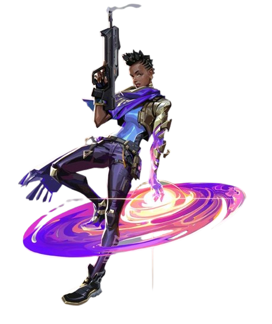
Astra
Astra, a Agente ganense, utiliza energias cósmicas para moldar o campo de batalha a seu bel-prazer. Com total domínio da sua forma astral e um talento estratégico nato, ela está sempre anos-luz à frente dos inimigos.
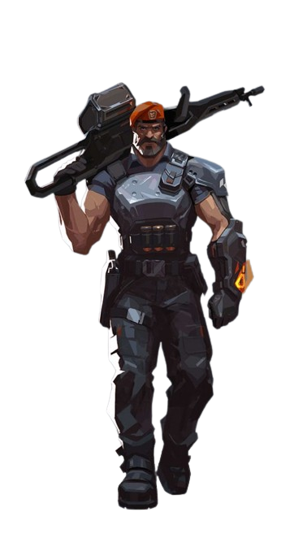
Brimstone
Vindo diretamente dos EUA, o arsenal orbital do Brimstone garante que o esquadrão dele sempre esteja em vantagem. Sua capacidade de oferecer utilitários com precisão e segurança faz dele um comandante inigualável na linha de frente.
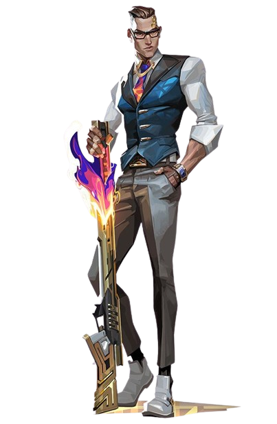
Chamber
Bem-vestido e armado até os dentes, o criador de armas francês Chamber coloca os inimigos para correr com precisão mortal. Use e abuse do arsenal personalizado dele para segurar posições e abater inimigos de longe, criando a defesa perfeita para qualquer plano.
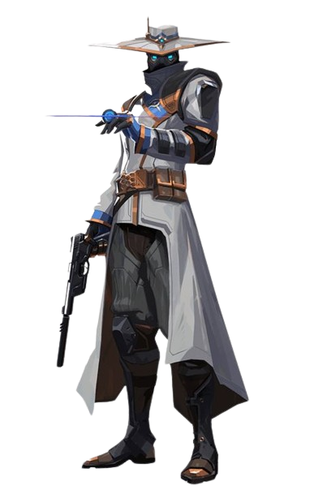
Cypher
Cypher, um vendedor de informações do Marrocos, é uma verdadeira rede de vigilância de um homem só que fica de olho em cada movimento dos inimigos. Nenhum segredo está a salvo. Nenhuma manobra passa despercebida. Cypher está sempre vigiando.
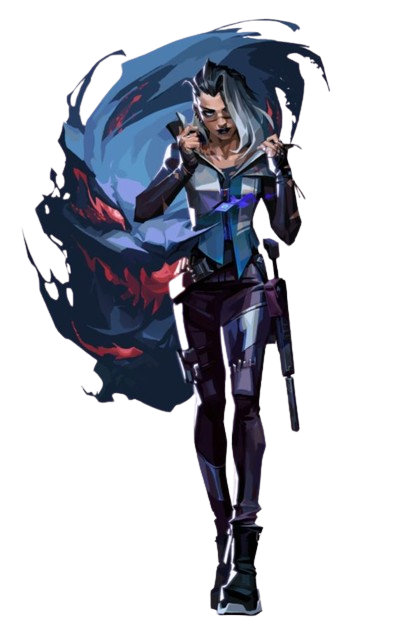
Fade
Fade, uma caçadora de recompensas turca, usa o poder dos pesadelos para capturar os segredos dos inimigos. Personificando o próprio terror, ela persegue os alvos e revela seus medos mais profundos para, depois, destruí-los na escuridão.
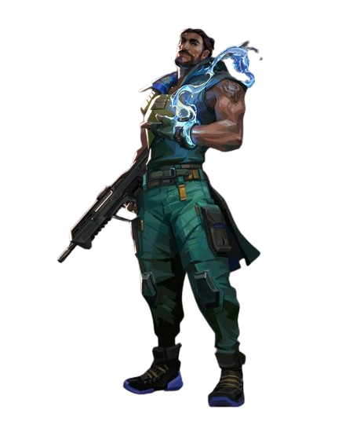
Harbor
Vindo do litoral indiano, Harbor entra em campo com a força da tormenta, empunhando tecnologia ancestral com domínio sobre a água. Ele libera corredeiras espumantes e ondas esmagadoras para proteger seus aliados ou atacar aqueles que se opõem a ele.
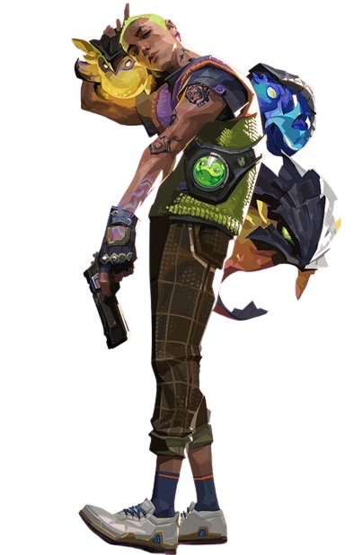
Gekko
Vindo do litoral indiano, Harbor entra em campo com a força da tormenta, empunhando tecnologia ancestral com domínio sobre a água. Ele libera corredeiras espumantes e ondas esmagadoras para proteger seus aliados ou atacar aqueles que se opõem a ele.
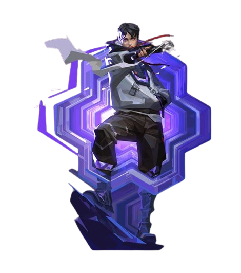
Iso
Iso é um mercenário chinês que entra em estado de fluxo para desmantelar os oponentes. Ele reconfigura a energia do ambiente para se proteger de balas e avança totalmente focado em direção ao próximo duelo até a morte.
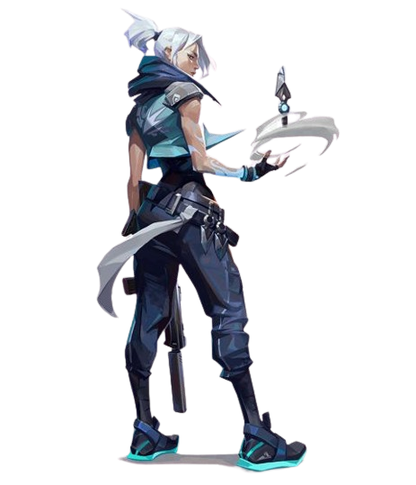
Jett
Representando a Coreia do Sul, sua terra natal, Jett tem um estilo de luta ágil e evasivo que permite que ela assuma riscos como ninguém. Ela corre em meio a qualquer confronto, cortando os inimigos antes mesmo que eles percebam quem ou o que os atingiu.
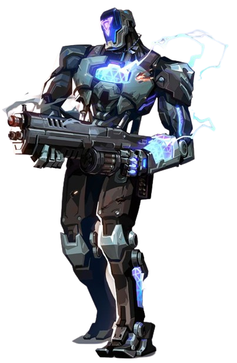
Kay/o
KAY/O é uma máquina de guerra construída com um único propósito: neutralizar Radiantes. Ele é capaz de Suprimir habilidades inimigas, anulando a capacidade de contra-ataque dos adversários e dando a si e a seus aliados uma vantagem essencial em combate.
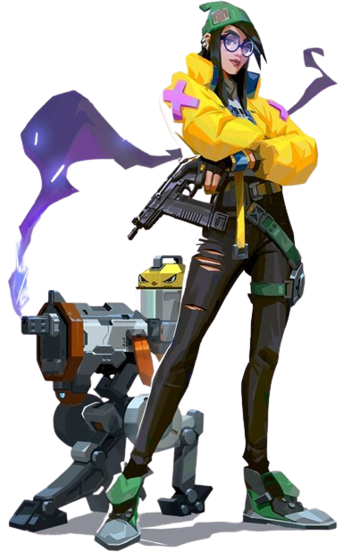
Killjoy
Uma alemã genial, defende posições-chave no campo de batalha facilmente com seu arsenal de invenções.
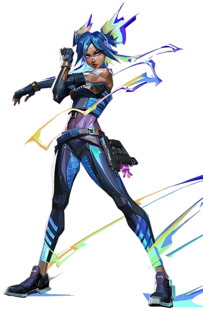
Neon
Neon, nossa Agente filipina, avança em velocidades incríveis, descarregando surtos de radiância bioelétrica tão rapidamente quanto seu corpo consegue gerá-los. Ela corre à frente para pegar os inimigos de surpresa, abatendo-os mais rápido do que um raio.
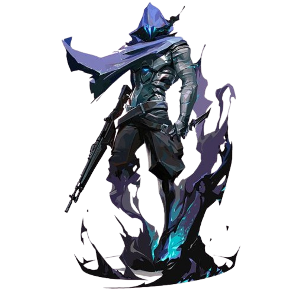
Omen
Omen, uma lembrança fantasmagórica, caça nas sombras. Ele cega os inimigos, teleporta-se pelo campo e deixa a paranoia assumir o controle enquanto o adversário tenta descobrir de onde virá seu próximo ataque.
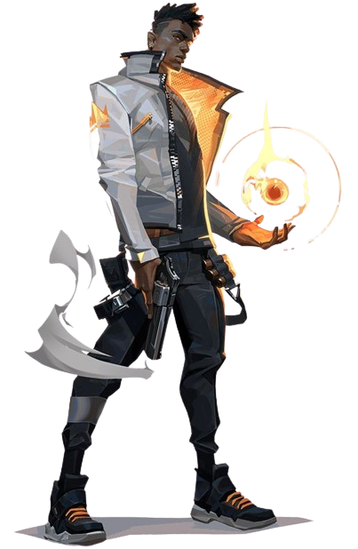
Phoenix
Chegando com tudo diretamente do Reino Unido, o poder estelar de Phoenix reluz em seu estilo de luta, incendiando o campo de batalha com luz e estilo. Tendo ajuda ou não, ele entra na luta como e quando achar que deve.
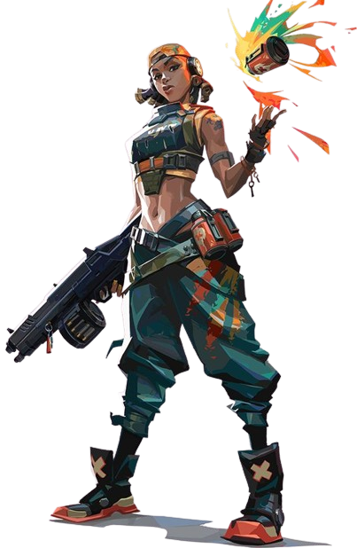
Raze
Raze chega do Brasil com uma explosão de carisma e armas enormes. Com seu estilo de jogo "porradeiro", ela é craque em desentocar inimigos entrincheirados e limpar espaços apertados com uma bela dose de BUUUM!
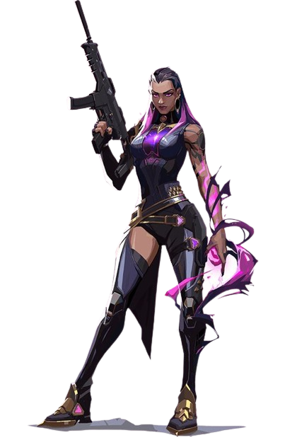
Reyna
Criada no coração do México, Reyna domina o combate individual, destacando-se a cada abate efetuado. Sua capacidade só é limitada por sua própria perícia, tornando-a bastante dependente de desempenho.
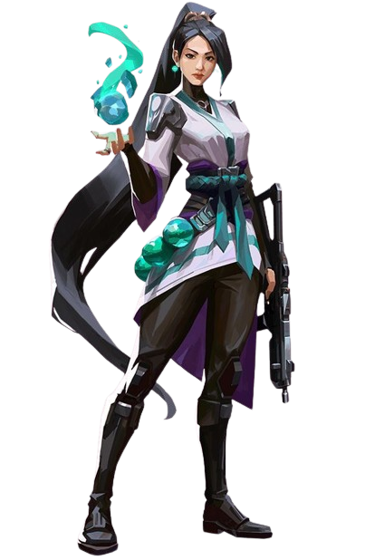
Sage
Como uma verdadeira fortaleza chinesa, Sage traz segurança para si mesma e para a equipe aonde quer que vá. Capaz de reviver aliados e rechaçar investidas agressivas, ela oferece um centro de calmaria em meio ao caos da batalha.
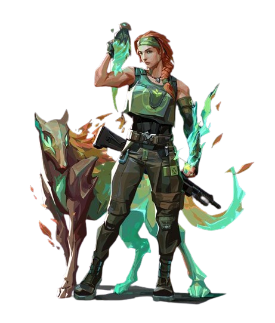
Skye
Mandando um salve direto da Austrália, Skye e sua equipe de feras desbravam territórios hostis. Com seus poderes de cura e suas criações que partem pra cima dos inimigos, qualquer equipe ficará mais forte e mais segura tendo Skye como aliada.
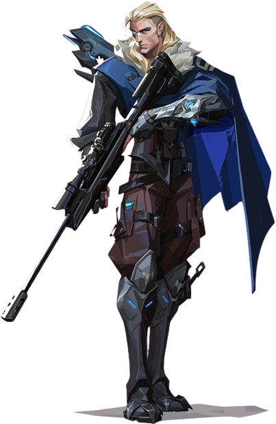
Sova
Nascido sob o eterno inverno das tundras russas, Sova rastreia, encontra e elimina inimigos com eficiência e precisão implacáveis. Seu arco personalizado e suas habilidades inigualáveis de reconhecimento garantem que nenhuma presa escape.
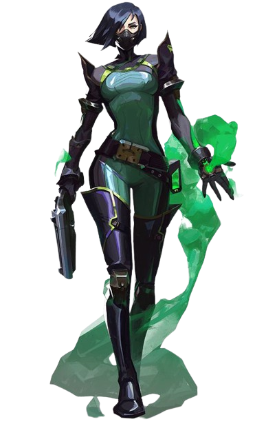
Viper
Viper, a química dos Estados Unidos, emprega uma variedade de dispositivos químicos venenosos para controlar o campo de batalha e prejudicar a visão do inimigo. Se as toxinas não matarem a presa, seus jogos mentais certamente o farão.
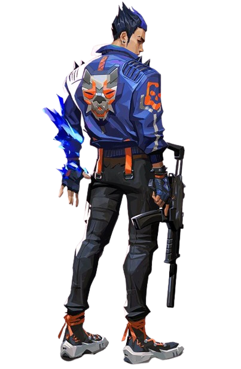